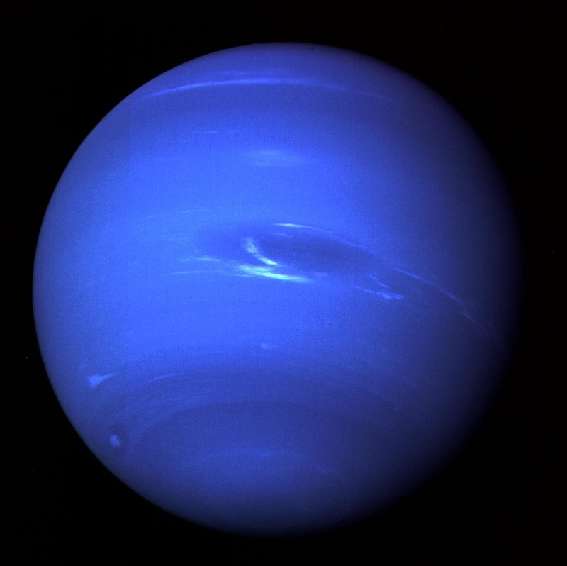

NEPTUNO

El planeta más lejano del Sol y el cuarto más grande. Su atmósfera azul intenso se debe al metano y es famoso por tener los vientos más rápidos del sistema solar. Posee anillos delgados y varias lunas, siendo Tritón la más importante.